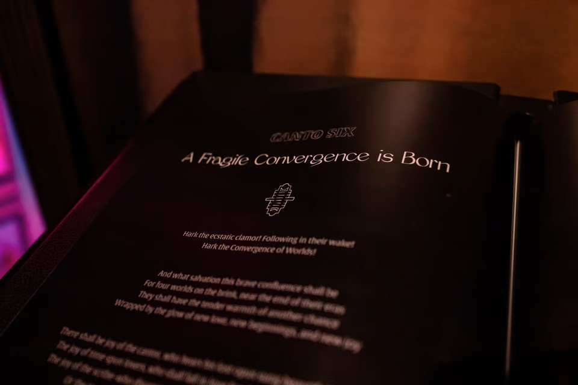

The Tome of Forgetting is an ancient Ossuarian tome that prophesizes the destruction of everything at the hands of the Mindsplitter. It is found in the Library of Ossuary.

Transcript
Canto One
Born of a scalding light - a conflux of worlds should be entwined
Brought into wild being from a tempest of stars
Behold: The Convergence
Lodestone of unruly harmonies
Bathed in wondrous and chaotic possibility
Where lost memories might be reclaimed and rekindled
Where generations of orphaned threads shall find their tapestry
Where old prejudices shall crack and crumble
Beside the warmth of clement culture and nascent unities
From the tragedies of the past new understandings shall be illuminated
From the poisoned mind: the seed of beauty shall bud and foster new compassions
From the unyielding demon of time: new pathways shall be untwined and charted
From the ashy rocks of an immolated world: vibrant histories shall be preserved
From the warrens of unending greed and disproportion: community shall thrive
from the doomed and icy steppes frozen for a thousand years: flowers shall bloom
New life, rooted in the acrid soil of the past, reaching for the sunlight of tomorrow
And Woe:
It shall all be forgotten
Canto Two - Origin of the Mindsplitter
In the blackest depths of the cosmos his loneliness was born
To only the company of his parents' cheerful lullabies
Echoing off the hull plates of the research vessel
and their frozen bodies in the cargo hold
Kept from unthinkable agony. Crowned into a kingdom of siren slumber
That when the tragic prince awoke, he yearned madly to return
To his kingdom that never was
Forgetter-sent from the heartless void of space to rend all soft things asunder
Prisoner of dreams, incarcerator of thought, eraser of being
The Mindsplitter
Canto Three - Origin of the Glimmer
Even ages ago, there it shone: a twisting fissure of brilliance, blazing in the sky
The Glimmer blinding all desires, but the procurement of its shine
The siren promise of such light is not so easily forgotten
The Y'ruk heard the call of the Glimmer, and forged an answer
A grand megastructure was erected from the crag, like a hand yearning for touch
Up they built, absorbing all their civilization had into this tower, all but their ambition
for what unimagined wonders lay patient for the climbers, beyond this perilous summit
With each step higher, the heedless Y'ruk grew more transfixed by the Glimmer
With each ascending moment, they lost one more memory of their lives before the climb
But oh, the irony such teetering possibilities belie
The hard-ground realization of the falling figure:
The brightest promises are often lies
Canto Four - From the Ashes, the Lineage Begins
And as the Y'ruk fell from the Glimmer's siren glare, their planet opened up in rage:
Spewing its burning innards; scorching the land; swallowing the living for their hubris
The survivors fled into darkness, never 'gain to see their suns: the age of Ossuary begun
In this darkness the lineage of librarians was born: with Lyra, first speaker of the stones
Thus followed Laqiqal, who would make greater the capacity to encapsulate things past
Thus followed The Caretaker, who helped the crags remember kindness
Thus followed Eliphas, who would enable the stone to recall the realm of dreams
Thus followed Max Beta, who would usher memory from antiquity to modernity
Thus followed Yarmles Ackerslag, misuser of memory, and shamer to the lineage
Thus followed Ripple, whose remembering brought balance to the old ways and the new
The lineage of librarians tolled for generations to preserve the past
But the stones spoke of a great light coming to erase the world of all its memories
And of a child who could illuminate the path to save them
Canto Five - Origin of Ruin
A half-born child named Rune shall find the prophecy inlaid in these dark pages
Shall glimpse the time-twisted warning of our dire fate, to be forgotten
Shall grasp the single leaf of paper upon which our future depends
Shall set the sacred stone into its mantle
Shall turn solid rock into a rippling ocean of time
Shall retrieve this Tome of Forgetting from its ageless reliquary
Thereupon, Rune and three entangled pairs shall unify In Convergence
Shall be holding all and hidden from all, together
Shall one day bestow this Tome to the time-spun traveler
They who hold the key - the past needed to secure the future we remember
Fabled savior of our memories - shouldst they complete their endeavor
Lest the Mindsplitter tear open his gateway to the Glimmer
And all that's wondrous here be forgot forever
Canto Six - A Fragile Convergence is Born
Hark the ecstatic clamor! Following in their wake!
Hark the Convergence of Worlds!
And what salvation this brave confluence shall be
For four worlds on the brink, near the end of their eras
They shall have the tender warmth of another chance
Wrapped by the glow of new love, new beginnings, and new joy
There shall be joy of the cantor, who hears his lost opus sung beautifully by a friend
The joy of time spun lovers, who shall fall in love for the first time, all over again
The joy of the scribe- who discovers her own words written in a stranger's hand
Or the joy of the broken family, given a second chance to mend
Oh! Such marvelous new colors shall be woven into this tapestry of life!
As feelings mysterious, new and old, rebalance along the eager abacus of their hearts
Hand in capable and considerate hand, they shall rebuild a freer and kinder world
And what they have lost of their lives before, they shall remember together
A motley and abundant communion, before the altar of change
But such intricate and nascent possibilities, due to their very nature
Shall be ever fragile, and vulnerable to the malign
Canto Seven - Eye of the Mindsplitter
Alas, this Convergence shall bring no remedy to the Mindsplitter
The wild confluences and creations searing his ambitions like salt in the wound
For what salvation does he search in the ether clouds of his mind?
He shall see a flicker of light slip through his grasp
And the Glimmer will consume him
He shall reason away the dissolution his desire inflicts on these worlds
If only his bright destination would bring him the solace he thought promised
In the nascent Convergence lay opportunity for his bleak direction
And so these worlds will fade away until not one memory remains
Into a wasteland, crafted from the barren planes of the intangible
The Mindsplitter shall trade all days away for tomorrow's glory
And as we are subsumed, we shall forget what a day ever was
Canto Eight - The Forgetting of the City
A blinding light will subsume C Street, the light of the great forgetting
Every vibrant sight of the city shall split, into shards of a fearful and uncanny dream
Every surface once grained with habitual suppleness, now shall scald and scrape
Every flavor once savory or succulent shall taste putrid or of rot
Every aroma once alluring, shall reek carbolic and foul
The clangs and notes that once echoed adventure off the city walls, these too shall spoil
The once wondrous din of C Street, shall degenerate into a harrowed wall
And once the light has dissolved all familiar things, the people shall forget themselves
Citizens shall pour into the streets as their memories pour out from their minds
frantically searching the disambiguating city for their loved ones and children,
Only in the madness, to forget which children were theirs.
Canto Nine - The Forgetting of the Caves
The new age of Ossuary, shall utter a final and irreversible cry
Deep underground the great forgetting shall cause the dust to settle in permanence
And the Y’ruk, molded in perseverance, shall watch the curtain fall on their civilization
There will be no more pasts to preserve, truths to behold, or dreams to bestow
All connections will disintegrate, ever to be estranged in the consuming void
The memories cradled in Ossuary's rocky embrace will be eradicated
Twisting and crumbling stone will lay no new paths, only waste
Sisters will look upon brothers with blank faces like hollow masks unworn
The winding catacombs, once illuminated, will be cast into eternal darkness
The Oss rock, once thought worthless, will see this ill perspective realized
The life giving fungi of the caverns, no longer understood, will act as poison in the vein
The walls will no longer echo with the ancient songs, but with the shrieks of the dwellers
fear will grip the hearts of those who remain until, in a whisper, they too fade
Unburned will be this plot of rock, this forgotten tomb swallowed by eternity
There shall be no memories to preserve and no one left to preserve them
The sanctuary of knowledge will collapse into withered nihil
Canto Ten - The Forgetting of the Ice
The coldest Eemian winter shall be that of the great forgetting
And with its baleful winds, they shall lose not only their families but their way of life
Their grand cathedral shall crumble, as they forget its hallowed purpose
Their celestial songs shall be forgotten to silence, never to be sung again
The greatest pang of loss shall be that which, even in one thousand years of ice.
The Eemians had never once let go of: hope
For even the stars, that long told their history and their future
Shall be emptied of meaning, their sacredness untethered
Every constellation shall taunt down from oblivion
For there can be no path back, to a home
If there be no home remembered
Canto Eleven - The Forgetting of the Earth
One day the great forgetting, unbiased in its havoc, shall reap Earth of its essence
The passing down of stories will be no more and the poetry of life shall be erased
None will recount the beauty that unfolded upon the beautiful blue emerald
Emptied will be the minds of humans who wove meaning into the world around them
Now severed from greater context and contemplation of their purpose
The bells will ring once more as their towers buckle under burning splinters
Though it is not a song of rejoice, but a dirge of desolation
At once displaced and stationary these empty vessels will line the shores
Pleading to remember, grasping for understanding
But the waves will bring only water and the time of remembering will have passed
Canto Twelve - The Mindsplitter’s Future
And beyond the blinding light of his gateway, his hands seize a new day:
Tilling the wasted planes of melted bodies: drained of history, culture, memory - all
Crushing the husks of their emptied lives, he sculpts the morass into a throng of puppets
Feeding them only his poisonous lies. He molds their soft minds like potter's clay
Coddling his stolen kin, as if he'd been not their undoer, but their loving father
Oh, how madly the ruined dance to his crooked songs of fortune!
A billion mindless marionettes, strung together feebly
By the strands of a beautiful world undone
***
His Future hath arrived
Canto Thirteen - The Traveler
But there lies a solitary chance that these worlds will not be lost to oblivion
For a Traveler will come, who with their hand might still this trembling domain
Though their destination will be cloaked in obscurity, it will be obtainable
The path they forge may spring salvation for the people of these withered worlds
That the minds of those erased may resuscitate with clarity and zeal
So cling with purpose to that which makes you whole
As all vibrance is devoured by the blinding void, lend hope to this mysterious Traveler
Their hand shall awaken Convergence, and the dawn of remembrance will rise eternal